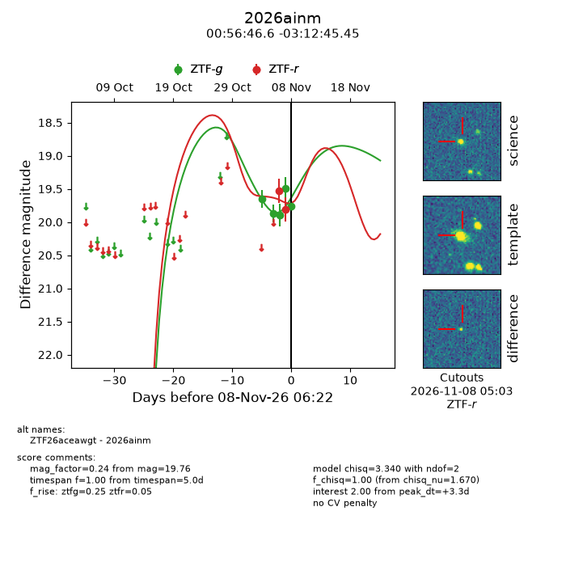
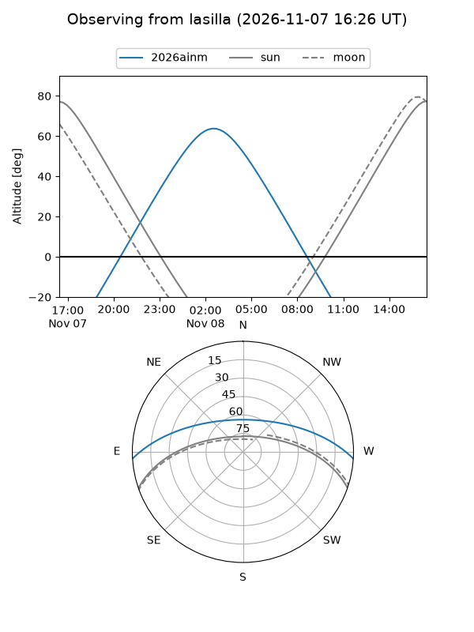
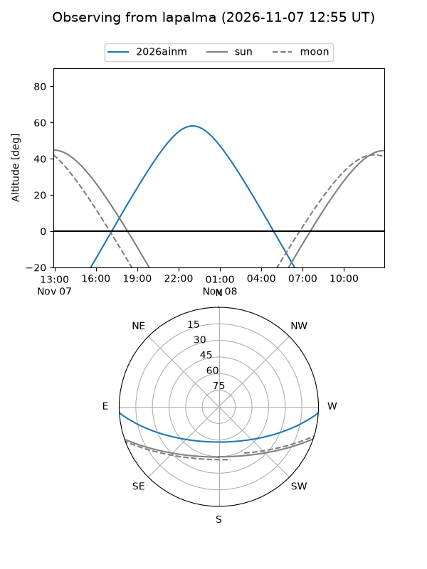
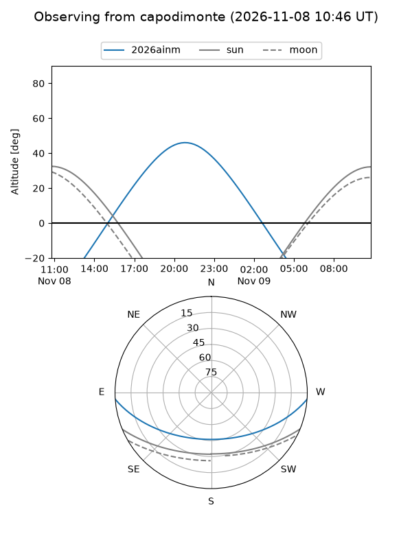
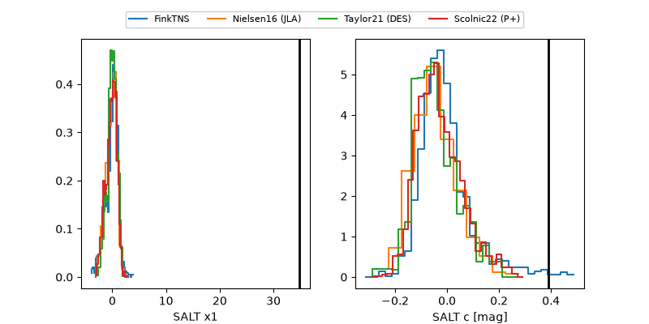

2026ainm
Target 2026ainm at 2026-11-08 06:24
Aliases and brokers:
FINK-ZTF: ztf.fink-portal.org/ZTF26aceawgt
Lasair-ZTF: lasair-ztf.lsst.ac.uk/objects/ZTF26aceawgt
ALeRCE-ZTF: alerce.online/object/ZTF26aceawgt
YSE-PZ: ziggy.ucolick.org/yse/transient_detail/2026ainm
TNS name: wis-tns.org/object/2026ainm
Direct TNS query: direct search
alt names
ZTF26aceawgt (ztf,fink_ztf)
2026ainm (tns,yse)
Coordinates:
equatorial (ra, dec) = 14.1941,-3.21262
equatorial (HMS+DMS) = 00:56:46.58,-03:12:45.45
galactic (l, b) = (126.2160,-66.05033)
Flags:
peak dt: +3.3
Photometry:
last ztfg=19.76, ztfr=19.81
5 ztfg, 2 ztfr detections
Lightcurve

Visibility



Additional plots
